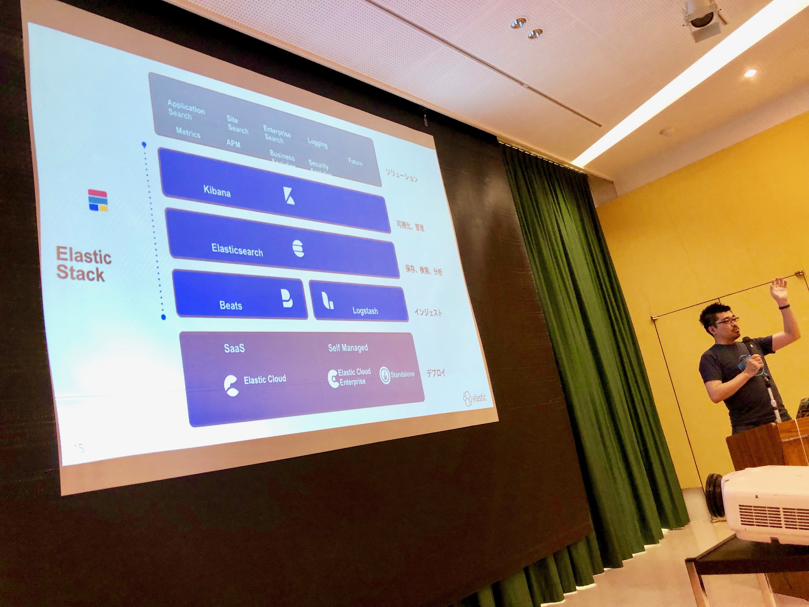
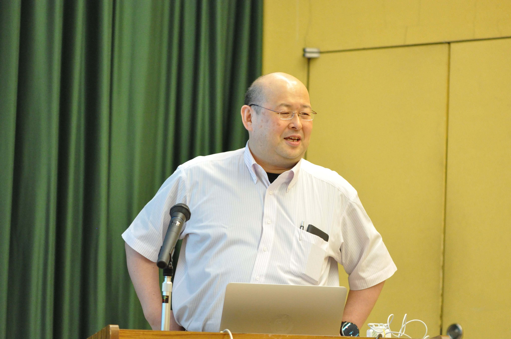
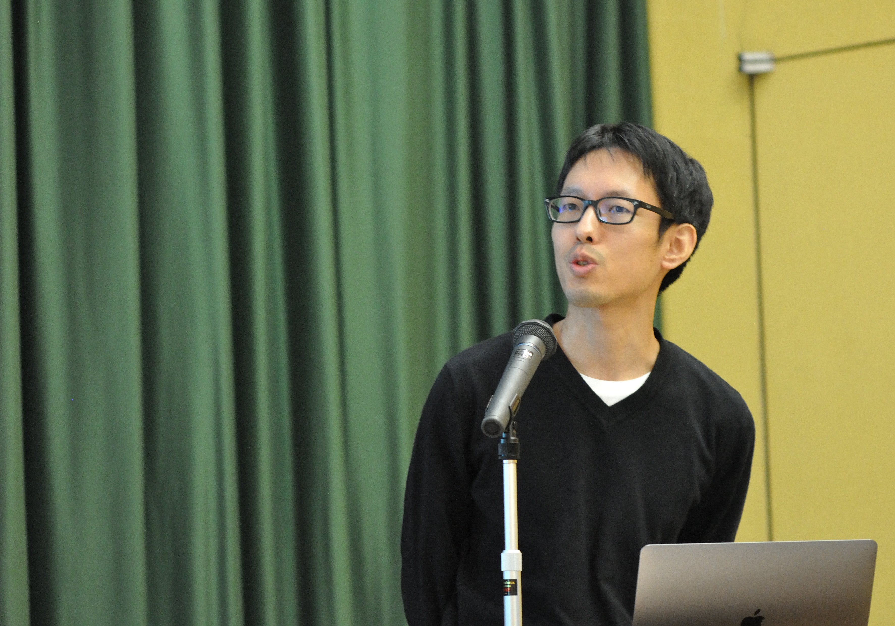
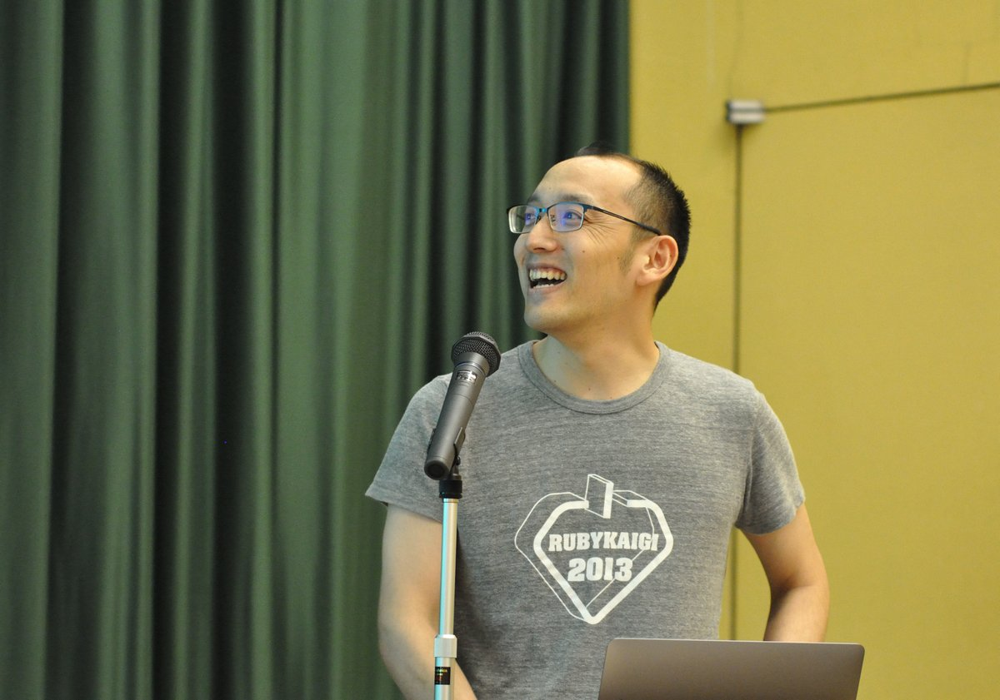
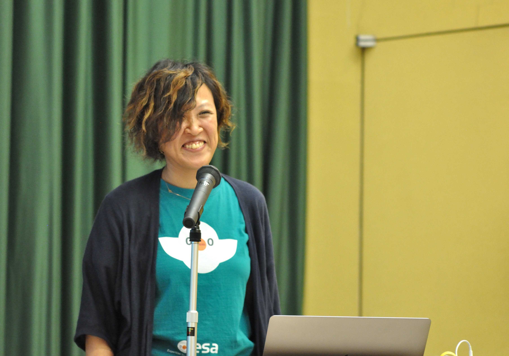
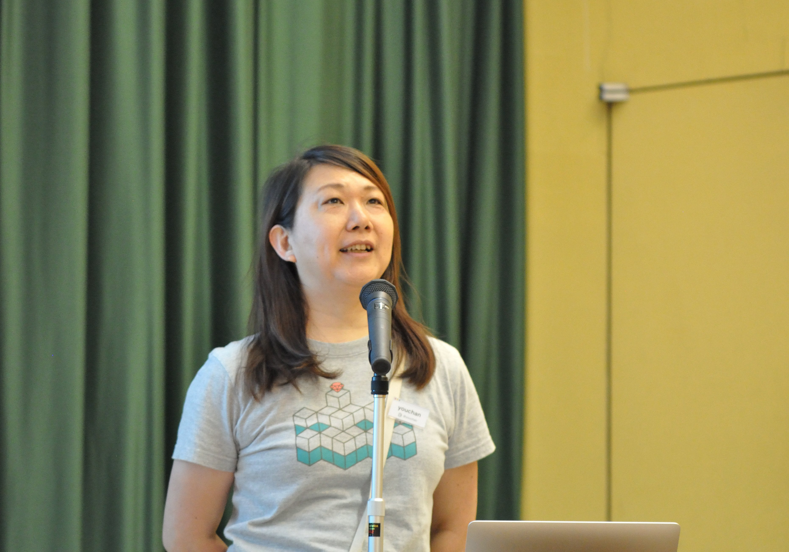

RegionalRubyKaigi レポート (75) とちぎ Ruby 会議 08
初稿：2019-08-18
とちぎRuby会議08レポート
書いた人
Saku35(github)
はじめに
- 日時 :2019/06/29(土) 11:00 ～ 20:00
- 会場 : 那須野が原ハーモニーホール
- 主催 : とちぎRubyの勉強会（toRuby)
- 後援 : 日本Rubyの会
- 参加者 : 約50名
ランチセッション

検索エンジンを開発しているElastic Searchから、@johtaniさんがご講演くださり、 Elastic Stackによる、デモサイトのデバッグ作業をライブしていただきました。 ウェブアプリケーションに疎い私にこのデバッグ作業がどれほど有用なのかわかったなんて口が裂けても言えませんが、ログの検索やらアクセスポイントの可視化やら、@johtaniさんが機能を紹介するたびに、「え、これ便利」と近くから声が聞こえてきたので、そんな風にこの機能の便利さを実感したいなーなんて思いました。
講演内容はこちら👉アプリケーション（パフォーマンス）監視入門 - Elastic編
招待講演１

北海道よりはるばる@sumimさんがオブジェクト指向とSmalltalkのお話をしに来てくださいました。 オブジェクト指向プログラミングの歴史から、Smalltalkの誕生など、いきなり大学の講義みたいな発表でびっくりしました。いろんなプログラミング言語があるけれど、それらに派生する前の中心部分にSmalltalkが存在するような、まだ漠然としてますが、そんなイメージを持つことができる講演でした。 @m_sekiさんが20年前に作ったSmalltalk処女作も公開していただいて、講演を通して「歴史」を実感しました。
講演内容はこちら👉オブジェクト指向とは何ですか？
招待講演２

@yharaさんが作ったzanzouというGemについてお話してくださいました。 Ovtoでアプリを作るときにapp.stateを破壊的に変更したくないということがモチベーションで作ったそう。必要は発明の母ですね。 ネーミングも@yharaさんのセンスが光っていて、破壊的操作をしたように見えて…していない、バトルマンガの「やったか…？やってない…」というところにインスピレーションを受けzanzou（残像）にしました。というトークには会場も笑いが起こっていました。
講演内容はこちら👉それは残像だ
招待講演３

Rubyを説明するのは難しい。と題し、@sugamasaoさんが自著「かんたんRuby」を製作していたときの体験談をご紹介くださいました。 puts “Hello World”を説明するだけでも、いろいろ考えてしまいますよね？という会場への問いかけ、クラスの説明に入った途端に情報量がいっきに増えることなど、初心者にRubyを教える時の大変さを会場と共感しながら進めていく講演内容に、聞き入っていました。 質問タイムでは、会場から「私はこういうの風にした」とか「私がプログラミングで楽しいと感じたのはこんな時」など積極的な意見・質問が出て、会場みんなが初心者にRubyを教えることに思いを馳せながら講演に参加できたのではないかと思います。
講演内容はこちら👉Rubyを説明するのは難しい(仮)
一般講演１

esaの@ken_c_loさんがesaについてる機能のひとつであるWIP(Work in Progress)について語ってくださいました。 WIPは、「これからまだ良くなりますけど、とりあえずここまでやりました」ということを前面に押し出すサインで、 WIPがやり始めのハードルをさげたり、読み手を優しくしたりすることで、自分のやったことが相手の役に立ちやすくなる。 という、WIPの素敵さを伝えてくれる講演でした。
講演内容はこちら👉esaのWIPの話 2019
一般講演２

@youchanさんがConway’s Game of Lifeをワンライナーで書いてきてくれました。 日本語ではライフゲームと呼ばれるもので、ワンライナー以外にライフゲームで描くデジタル時計など、ライフゲームの面白さの一端に触れさせてくれる貴重な講演だったと感じました。 Ruby会議で興味を持ったConway’s Game of Lifeをワンライナーで描くことによって、日々の好奇心や創造力を大事にすることも説いてくださったすてきな講演でした。
講演内容はこちら👉ワンライナーで書く「Game of Life」
一般講演３

高橋、RubyKaigiやめるってよ と題しまして、@kakutaniさんが講演してくださいました。 高橋さんがRuby会議をやめると言ったとき、周りの人がどうRuby会議のことを考えて、どういう気持ちをこめてリブートしたのかということを熱く語ってくださいました。 最近Ruby界隈に関わり始めた人にとっては、Rubyコミュニティの概観を把握するのにはもってこいの講演で、かつ@kakutaniファンにとっては久しぶりの@kakutani節を見られたということで、新参者から古参まで幅広く楽しめる、満足感の高い講演だったと思います。
講演内容はこちら👉The Kaigi Thing 高橋、RubyKaigiやめるってよ
基調講演とハンズオン

@m_sekiさんが、分散オブジェクトとはあれですか？と題しましてdRubyについて講演してくださいました。 5分でおわる基調講演。残りの55分はdRubyを使ってしりとりをしました。 ネットワークを介して他人のオブジェクトにさわるという、かつてない触れ合い体験によって、dRubyの不思議さ・すごさに魅了された人も多いでしょう。
講演内容はこちら👉分散オブジェクトとはあれですか？
特別LT

この日、お誕生日を迎える@june29さんにLT時間6分29秒という特別LTを依頼し、 「令和元年版 大和田家を支える技術」と題しまして、@june29、@mamipeko夫妻にLTしていただきました。 円満な環境をテクノロジーによって構築した実例の数々。 Slack, Scrapbox, M5Stack, スマートロックなどなど、大和田家に合わせたオリジナルのライフハックをご紹介いただきました。 明日我が家でも使いたくなる、ライフハックへのヒントやモチベーションをもらえるLTだったと思います。 6分29秒という異色のLT時間を抜群のタイムキーピング力によって乗りこなした夫妻には、大きな拍手が送られました。
講演内容はこちら👉大和田家を支える技術 令和元年版
2分間LT
立食形式のパーティと並行して、2分間LTが開催されました。用意された2時間というたっぷりの時間は、とちぎRuby会議08の参加者全員が発表するのに十分な時間で、実に40名ほどが各々自分の好きなこと・関心のあることについて発表しました。 筆者としてはこの「2分間」というのは絶妙で、最悪うまくいかなくてもたった2分だ・・・と思えば、かなり参加ハードルが下がって初LTを乗り越えることができたのでした。 発表内容も面白いものばかりでしたが、40題目以上をここに書ききるわけにはいかないのが残念です。あえて筆者が個人的に印象に残ったものをあげるなら・・・@yharaさんのSumotalkですね。